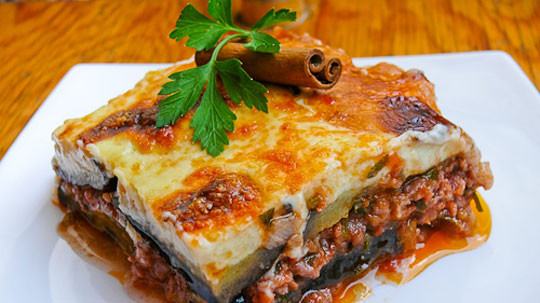
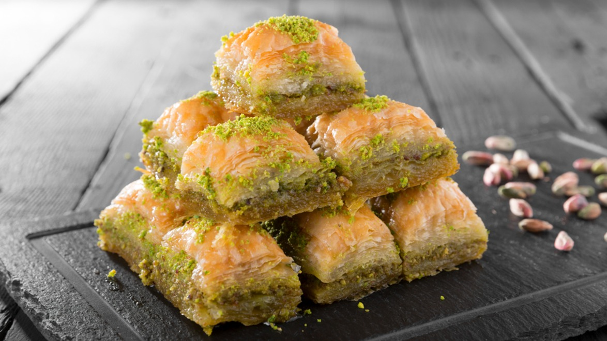
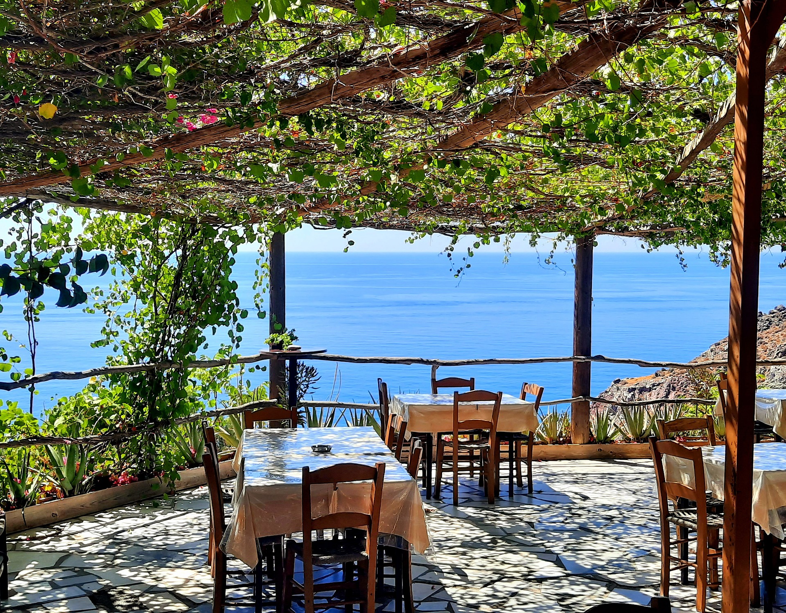

Un Festin pour les Sens : La Cuisine Grecque
Préparez-vous à un voyage gustatif exceptionnel à travers la Grèce, où chaque repas est une célébration des saveurs méditerranéennes.
La cuisine grecque, délicieuse et diversifiée, est le reflet de l'histoire, de la culture et du climat généreux de cette nation ensoleillée.
Une Symphonie de Saveurs

La cuisine grecque est une symphonie de saveurs, mettant en valeur des ingrédients frais et des herbes aromatiques.
Goûtez à la moussaka, ce plat emblématique composé de couches d'aubergines, de viande hachée et de béchamel crémeuse, ou aux souvlakis grillés, des brochettes de viande marinée accompagnées de tzatziki rafraîchissant.
Voici un lien vers la recette de la mousaka : cliquez ici !
Douceurs Divines

Terminez votre repas en beauté avec les délices sucrés de la Grèce. Les baklavas, feuilletés au miel et aux noix, et les loukoums délicatement parfumés sont des incontournables pour satisfaire votre dent sucrée. Accompagnez-les d'un café grec fort et sucré pour une expérience complète.
Tavernes Traditionnelles et Expériences Culinaires
Explorez les tavernes traditionnelles disséminées à travers les ruelles pittoresques. Rencontrez des chefs passionnés qui transmettent les recettes familiales de génération en génération. Imprégnez-vous de l'atmosphère chaleureuse et conviviale des repas grecs, où la nourriture est une célébration de la vie.
Que vous soyez un amateur de gastronomie ou simplement en quête d'une expérience culinaire authentique, la cuisine grecque vous invite à une aventure pour les sens, où chaque bouchée raconte une histoire de traditions savoureuses.
